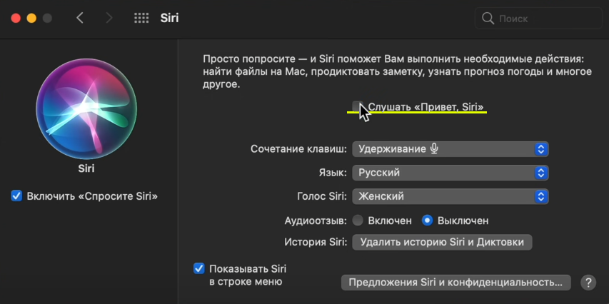
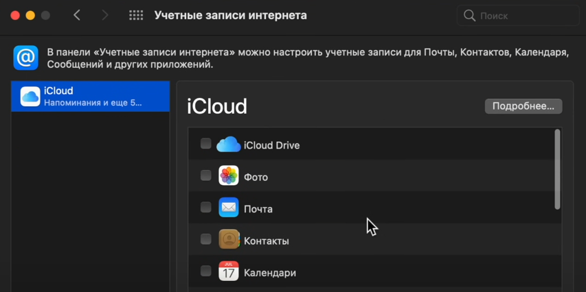
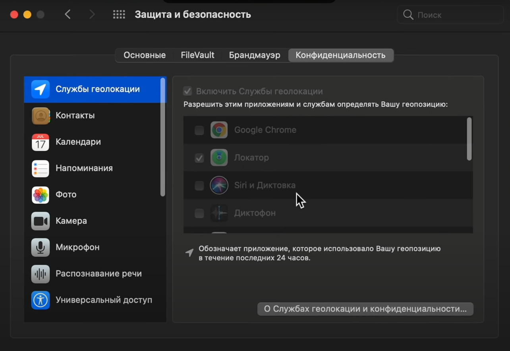

Данная настройка отключит постоянное использование микрофона.
Отключите синхронизацию неиспользуемых сервисов, фоновые процессы сихнронизации потребляют энергию.
Геолокация значительно потребляет энергию, оставьте ее только там, где это необходимо.
